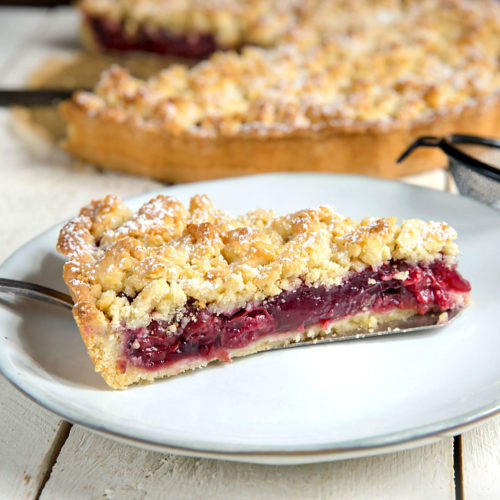

KOCHBUCH
Kirschkuchen
Zutaten
- 200 g Butter
- 250 g Mehl
- 0.5 Pk Backpulver
- 4 Stk Eier
- 1 Prise Salz
- 500 g Kirschen (entsteint, frisch)
- 180 g Staubzucker
- 1 TL Zitronenschale (gerieben)
- 2 EL Staubzucker zum Bestreuen
Rezept
- Für den Kirschkuchen die Butter und den Zucker zu einem hellen, cremigen Teig rühren. Nun die Eier einzeln unterrühren bis der Teig schaumig ist. Jetzt Salz und Zitronenschale untermengen und dann das mit Backpulver vermischte Mehl unterrühren.
- Als Nächstes den Backofen auf 200°C Ober-/Unterhitze vorheizen, ein Backblech (oder Springform) mit Backpapier auslegen.
- Die Kirschen in ein Sieb geben, waschen und abtropfen lassen. Nun den Teig auf das Backblech streichen, die Kirschen darauf verteilen und bei 180°C Ober-/Unterhitze ca. 15-20 Minuten backen.
- Den Kuchen auskühlen lassen und vor dem Servieren mit Staubzucker bestäuben.
